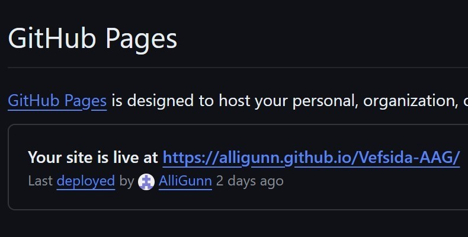

Introduction
The first assignment of the course VÉL608G Modern Manufacturing Processes was to make a website (this website) that would act as a portfolio for the course's assignments aswell as getting familiar with git. Here you can see the process of making this website, how it was done and the challenges encountered on the way.
The preperation and gathering information
Before I started the making of this website, I read the assignment description thoroughly and watched the YouTube videos related to this project, and read a guide on the HTML language at w3schools .
After gathering some information and having formulated a rough idea of how I wanted my website to look I downloaded the recommended programs for this assignment. I downloaded Brackets from Brackets. Brackets is a convenient program that allows you to see a live preview of the website. I then made a GitHub account to be able to launch the website as well as downloaded git Bash from Git to load the project to my repository.
The making of this website
After gathering the necessary information and tools for the project I searched for the ideal website template at HTML5UP. I needed it to be simple, neat, and aesthetically pleasing as well as having a drop-down menu that you can view all the assignments from. I decided to go with the Landed template as it fit my criteria for the website. I then downloaded it and opened it in Brackets, where I began to refine the website in accordance with the requirements. Such as deleting unwanted sections and adding necessary sections to the homepage in addition to creating a HTML file for each subpage and linking them to the correct places on the drop-down menu and “learn more” buttons. I then changed all the texts on the homepage and the drop-down menu as well as linked the icons in the footer to the correct places on every page.
I needed to replace all the pictures in the template to fit my project. I did that by cropping the pictures to the same size as the original pictures in the photo editor on my computer and then utilized the following code to display them.
<a href="#" class="image"><img src="images/pic09.jpg" alt="" /></a>
For the pictures that I added, that is not the ones I replaced. I used <center> to center it and <figcaption> to label it.
<center>
<a href="#" class="image"><img src="images/pic09.jpg" alt="" /></a>
<figcaption>Picture of the three icons in the footer</figcaption>
</center>
The CV
Additionally, to the assignment portfolio the website had to have your CV. I wanted to display my CV as a pdf document, so I searched on google “how to display a pdf in html” and found my solution at Wondershare. Where I learned I could use the iframe tag, however it didn’t quite fit the page as I wanted.
So, I asked ChatGPT how to fit the pdf to the page which resulted in the code below.
<style>
body, html {
height: 100%;
margin: 0;
}
#page-wrapper {
display: flex;
flex-direction: column;
height: 100%;
}
#header {
background: #333;
color: #fff;
padding: 1em;
text-align: center;
}
#pdf-container {
flex: 1;
overflow: hidden;
}
#pdf-viewer {
width: 100%;
height: 100%;
}
</style>
Publishing the website
Upon finishing the design of my website, I could publish it by uploading it to GitHub using Git Bash. I started by creating a repository in GitHub, made it public and assigned it a name. I then opened Git Bash, which I had downloaded at the start of the project, in the website’s directory by right clicking inside the website's folder and selecting "Open Git Bash here.
When you create the repository GitHub gives you detailed instructions on how to upload your website to the repository (see the picture below). However instead of using “git add README.md” you can use “git add .” to add all the files in the directory. This modification allows for the addition of all files, enhancing efficiency in the process.
When I did this for the first time, I received an “Author identity unknown” error which led to a “src refspec main does not match any” error.
I discovered the solution to this issue on Stack Overflow and by executing the provided code,
GIT_AUTHOR_EMAIL="you@email.com" && GIT_AUTHOR_NAME="Your Name" && git commit
, along with following the rest of the instructions, I was able to successfully upload my website to the repository.
After successfully pushing the files with Git Bash they should be in the repository you made on GitHub. There you need to go to settings>pages and make sure that you have the main branch selected as well as the root folder. Then a link to your website will appear if you exit the settings and open it again.
-
Main branch and the root folder selected - 
The website becoming live